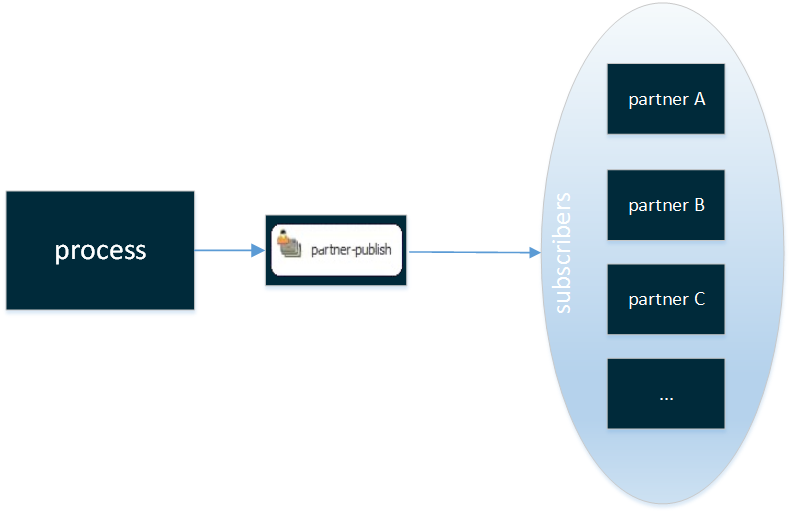
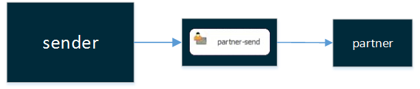
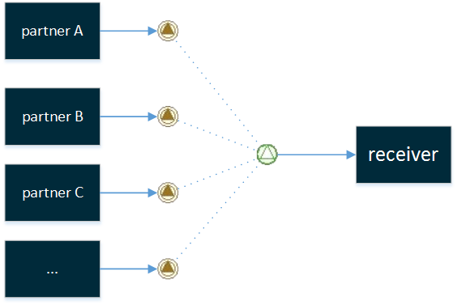

Partner Management Reference

Topic content
Partner Type Business Object Partner
The Partner Management is a another useful tool that provides opportunities to organize your procedural sequences.
It facilitates the communication between the scenarios created with the Orchestra designer.
Abstract examples of use-cases can be the distribution of given information between a sender-scenario and any number of receiver-scenarios or to reunite information given by diverse sender-scenarios to work with in a single receiver-scenario. The Transmission occurs either by the transfer of business-objects (publisher-subscriber, sender-receiver) or signals.
Overview
There are different ways to use the Partner Management listed below
Publisher-Subscriber:

exemplary use-case: Read information from a single database, create a file and deploy the file on all subscribers FTPs.
See also Partner-publish
Sender-Receiver:

exemplary use-case: Send information to a specific partner.
See also Partner-send
Throw-Catch-Signal:

exemplary use-case: Observe customers mailboxes and parse the content, build a file and deliver this document to a supplier.